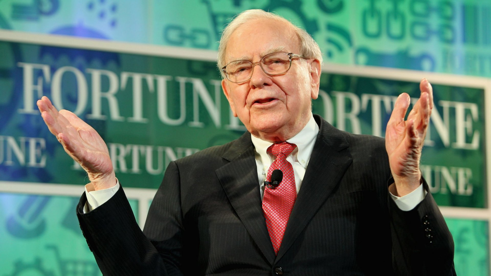

A message from Warren E Buffet

Dear Reader, you probably know that I don't make stock recommendations. However, I have two thoughts regarding your personal expenditures that can save you real money. I'm suggesting that you call on the services of two subsidiaries of Berkshire: GEICO and Borsheim's. I estimate that about 40% of all auto drivers in the country can save money by insuring with GEICO. The figure is not 100% because insurers differ in their underwriting judgments, with some favoring drivers who live in certain geographical areas and work in certain occupations more than GEICO does. Read more...
Warren’s Contributions to Foundations
Comments by Warren E. Buffett in conjunction with his annual contribution of Berkshire Hathaway shares to five foundations - June 23, 2021. The links below are to letters from Warren E. Buffett dated June 26, 2006 and to a letter to Mr. Buffett's three children dated August 30, 2012 regarding pledges to make gifts of Berkshire stock. Read more...
News Release About Berkshire
This page contains dozens of news releases about Berkshire Hathaway and Warren Buffet. Read more...